Writing
Features and reports I’ve written as a multimedia journalist at Nutshell Today, on memory and the 2024 uprising, disability, work, endangered languages and the politics of technology.
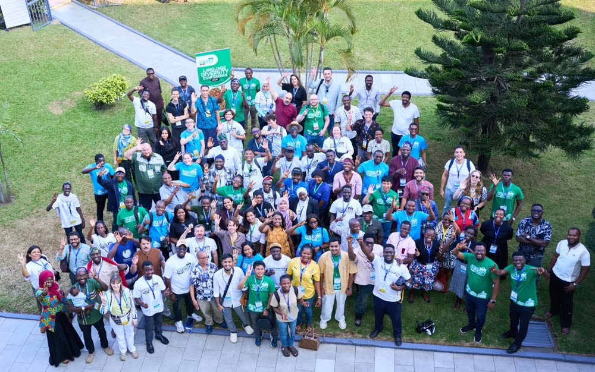
From a Golden Pot to the Global Stage
Bangladesh documents Chak, one of its most endangered languages, and its organisers take the work to a conference in Ghana.
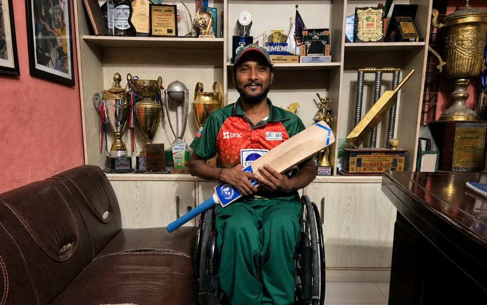
From crawling to cricket
Polio survivor Mohammad Mohasin founded Bangladesh’s wheelchair cricket movement and now campaigns for public spaces that work for wheelchair users.
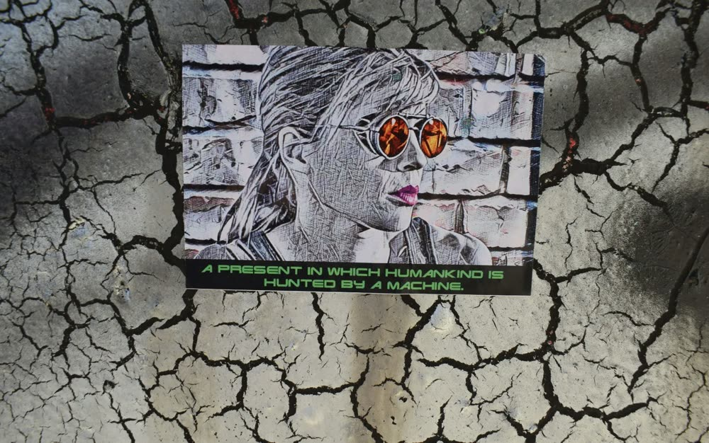
Two truths and a lie: there’s more to the AI apocalypse than you think
Tech executives warn of an AI apocalypse while raising funds and expanding compute. Who profits, and who shapes the rules?
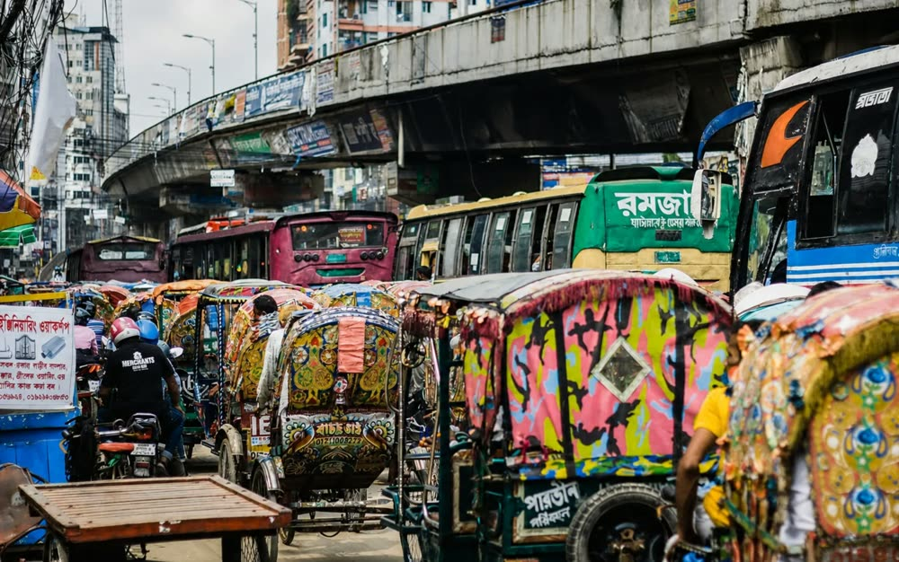
Dhaka wants them gone. What do they want?
Dhaka plans to restrict battery-powered auto-rickshaws, and thousands of drivers stand to lose their living.
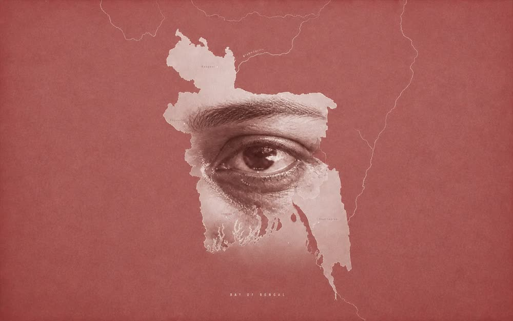
Aim to Blind
Shotgun pellets in the July 2024 crackdown caused more than 1,300 eye injuries and left many protesters permanently blind.
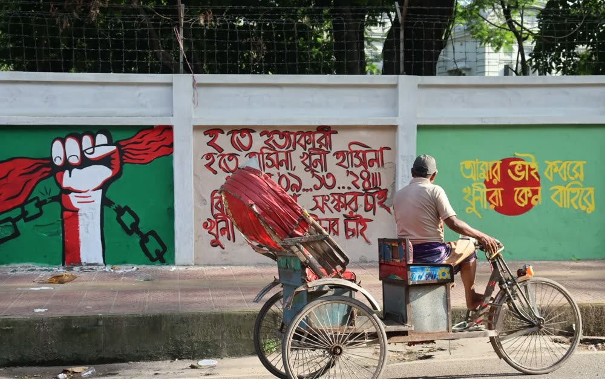
Are the walls fading?
The murals of the July–August 2024 uprising are being painted over, erased or left to decay. Who keeps the memory?
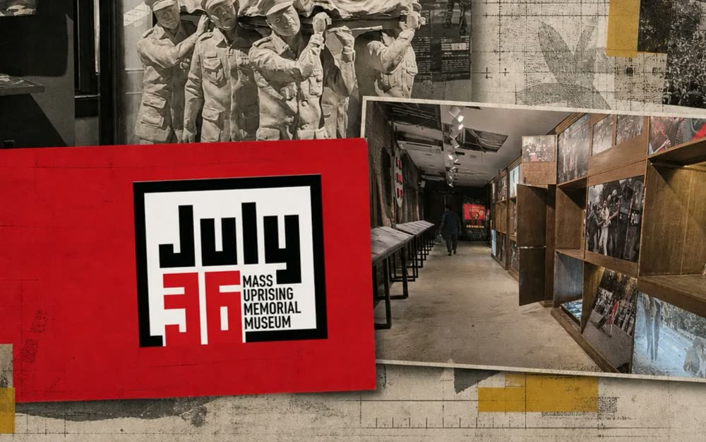
July Museum opens to crowds but with cracks
The July Museum draws large crowds amid ticketing failures, poor crowd control and arguments over which memories it should keep.
Beyond the byline
Before Nutshell Today I wrote news at Jamuna Television’s web desk, Splash and Dhaka on Air. In the Wikimedia movement I write documentation, case studies and reports.
- Meta-Wiki and Wikimedia Commons
- Campaign pages and reporting to partners
- Learning and evaluation, Meta-Wiki
- Wikitongues fellowship and Wiktionary
Where my photographs ran
Newsrooms and magazines around the world have published my photographs. A few of the pages I’ve found.
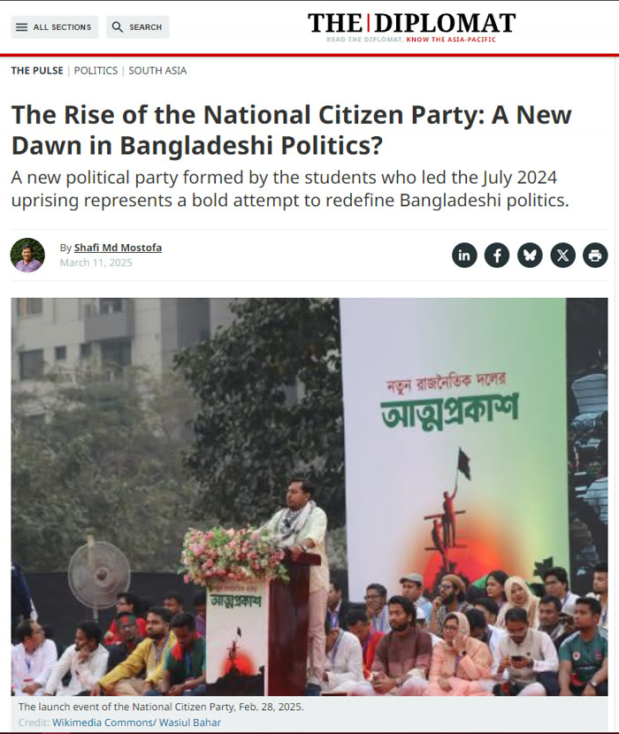
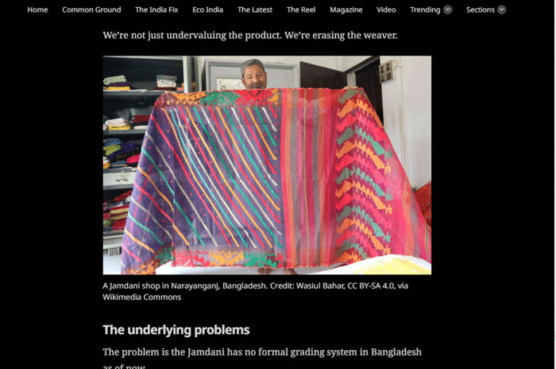
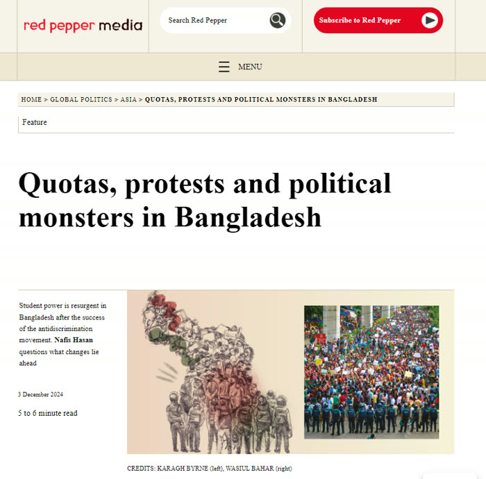
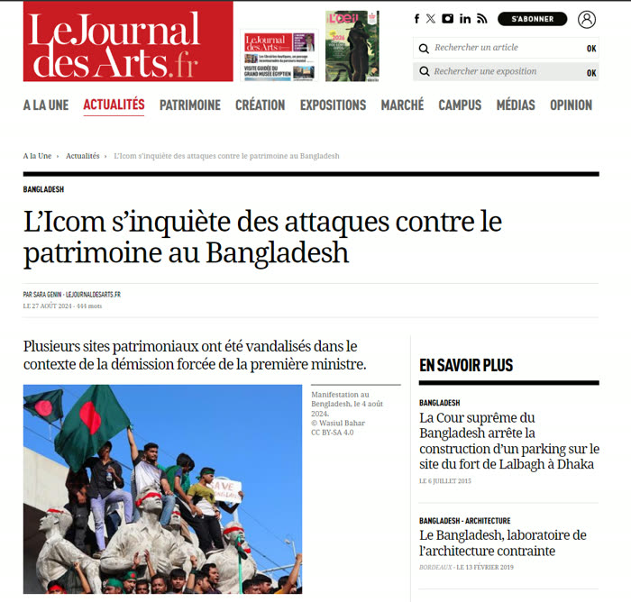
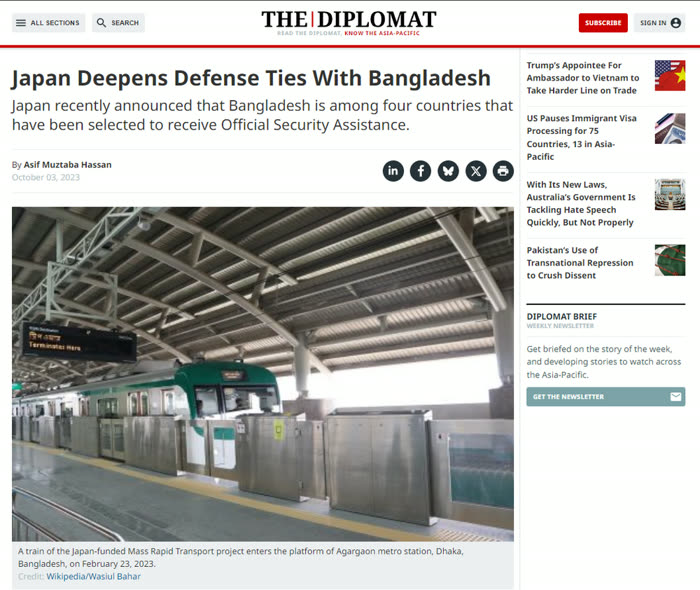
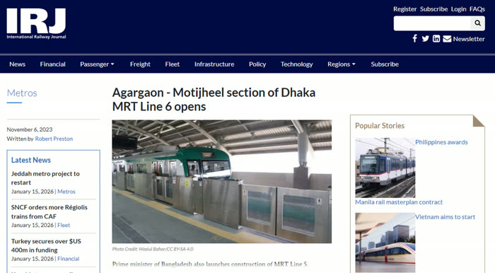
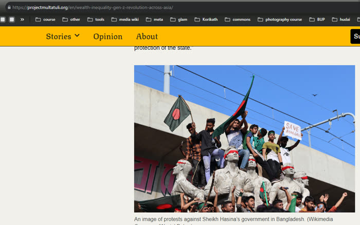
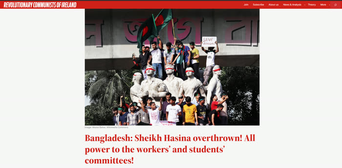
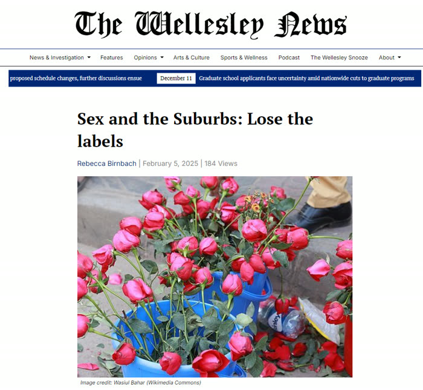
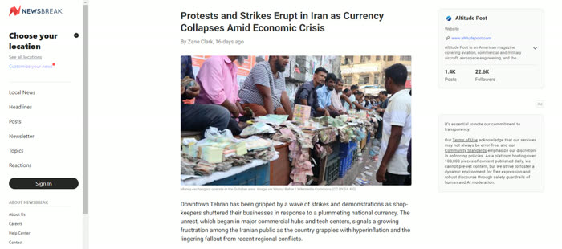
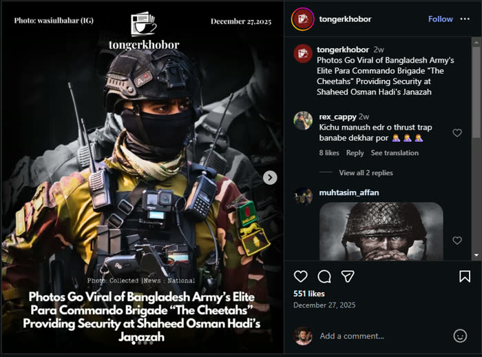
Also in The Wire, and on many pages I haven’t found yet.